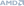
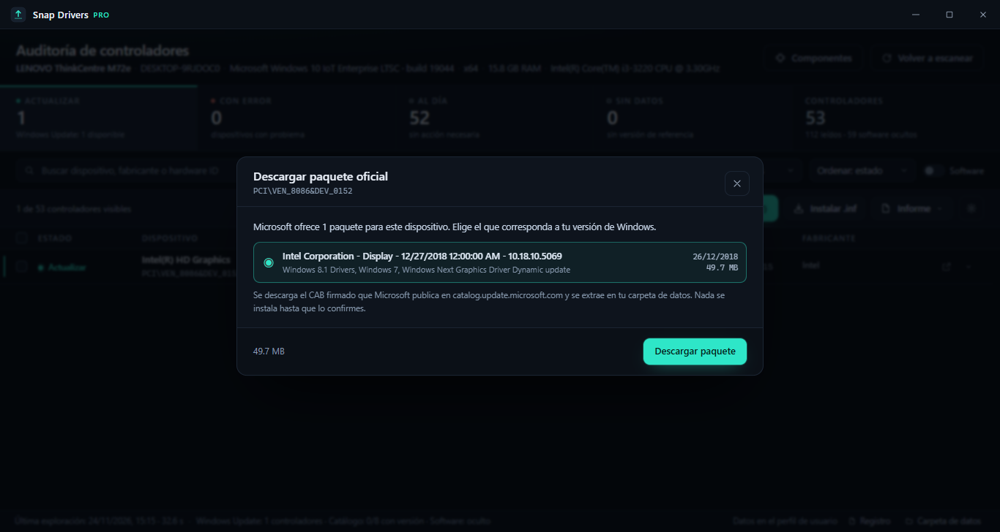
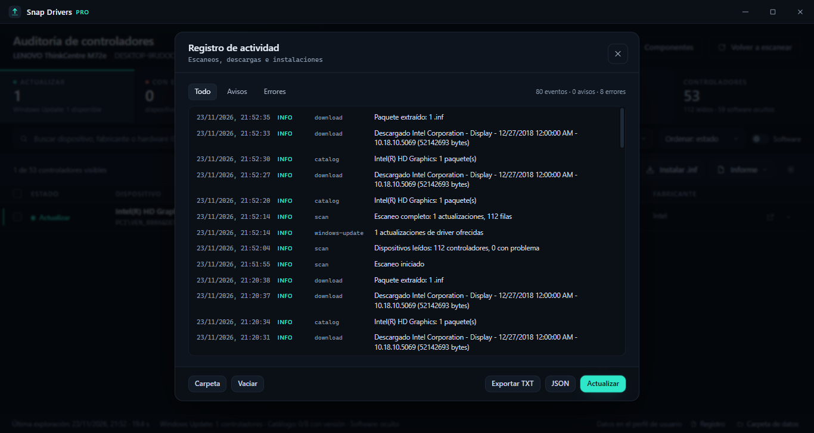

Auditoría del sistema
Inventario completo: versión, fecha, firma digital, INF, identificadores de hardware y estado PnP, incluidos los dispositivos con error.
Windows 10 y 11 · x64 · versión 2.5.3
Snap Drivers Pro audita cada controlador del equipo, contrasta su estado con Windows Update y descarga el paquete firmado que Microsoft publica para tu hardware exacto. Sin catálogos de terceros y sin telemetría.

Instalación por usuario; la auditoría no requiere permisos elevados.
Compatible con hardware de



Capacidades
Cada paquete que se instala proviene de Microsoft o del fabricante que corresponde, y la aplicación indica siempre su origen. El resto es trazabilidad.
Inventario completo: versión, fecha, firma digital, INF, identificadores de hardware y estado PnP, incluidos los dispositivos con error.
Del identificador de hardware al paquete CAB firmado por Microsoft, con progreso verificable y sin espejos intermedios.
La cola se prepara por completo y se aplica con una única confirmación de Windows, en lugar de un aviso por controlador.
Chipset, audio y touchpad se resuelven con el fabricante del equipo; GPU, red y Bluetooth, con el del componente.
Cada escaneo, descarga e instalación queda documentado con su código de resultado y es exportable a TXT o JSON.
Al iniciar se consultan las versiones publicadas en el repositorio y se notifican las novedades con la nota de la release.
Capturas



Método
Se leen los controladores y se consulta Windows Update. La operación es de solo lectura: nada se modifica.
Los paquetes oficiales se guardan en la carpeta local con progreso en segundo plano y sin bloquear la interfaz.
Una confirmación de Windows instala el lote completo. Si un paquete requiere reinicio, se reanuda con un nuevo análisis.
Preguntas frecuentes
Windows Update y el Catálogo de Microsoft Update, con la URL que Microsoft devuelve para tu identificador de hardware. No se usan espejos ni repositorios de terceros.
No. Ajustes, catálogo, instalaciones y registro permanecen en la carpeta local de la aplicación.
Instalar un controlador implica escribir en el almacén de Windows. Se eleva únicamente esa operación, una vez por lote; el análisis es de solo lectura.
Sí. Al arrancar consulta las versiones publicadas del repositorio y, si existe una nueva, la presenta con su nota de cambios y la opción de instalarla.
Puede ocurrir la primera vez, ya que el ejecutable no está firmado con un certificado comercial: «Más información → Ejecutar de todas formas».
Sí. En las clases del sistema prevalece el fabricante del equipo (Legion, ROG, Predator, OMEN, Alienware, MSI…); en GPU y red, el del chip.